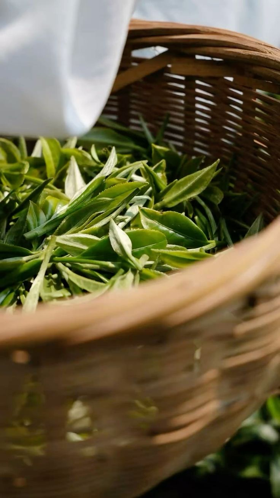

Sophie Nadal-Sanchez
Une Histoire
de Passion
Je suis Sophie, créatrice d'Au Chaudron Fleuri. Ce projet est né d'un désir profond de me relier à la terre, aux saisons et aux rythmes naturels. J'avance en accord avec le temps, en laissant la place à l'écoute et à l'adaptation. Inspirée par les plantes et les savoirs anciens, je cultive ici un lieu ancré et vivant. Une invitation à l’éveille les sens.
100%
Bio
2025
Création
30+
Créations

"Nos plantes sont récoltées à maturité, séchées lentement, transformées artisanalement en petites séries. Sans arômes artificiels, ni colorants. Simple, naturel, fidèle à la plante."